자기비파괴검사기사 (2017-03-05 기출문제)
1과목: 비파괴검사 개론
1. 결함의 형상을 육안으로 확인할 수 있어 해석이 용이한 비파괴검사법만으로 조합된 것은?
- 방사선투과검사, 자분탐상검사
- 초음파탐상검사, 침투탐상검사
- 와전류탐상검사, 자분탐상검사
- 와전류탐상검사, 침투탐상검사
(정답률: 75%)

2. 압력용기 내에 있는 이상기체에 2배의 압력을 가하면, 이 이상기체의 부피는 몇 배가 되는가? (단, 온도는 일정하다.)
- 1/2
- 1
- 2
- 4
(정답률: 66%)
3. 침투탐상검사에서 침투액의 점성(Viscosity)은 침투액의 어떠한 성능에 가장 큰 영향을 미치는가?
- 침투력
- 세척성
- 형광성
- 침투속도
(정답률: 59%)
4. 부품의 체적검사에 적용되는 비파괴검사의 물리적 현상은?
- 전자파, 열
- 방사선, 초음파
- 전자파. 음파
- 침투액, 미립자
(정답률: 60%)
5. 셀레늄(Selenium) 등의 반도체 뒤에 금속판을 대고 균일한 전하를 준 후 시험체를 투과한 방사선에 노출되면 방사선의 강도에 따라 반도체의 저항이 작아지고 전하가 이동하여 방전하게 되는데, 여기에 반대 전하를 도포하면 육안으로 확인 가능한 영상이 형성되며 이에 적절한 수지를 도포함으로써 영상을 형성할 수 있다. 이 원리를 이용하는 방법은 무엇이라고 하는가?
- 건식 방사선 투과검사법(Xero radiography)
- 전자 투과검사법(Electron radiography)
- 자동 방사선 투과검사법(Auto radiography)
- 순간 방사선 투과검사법(Flash radiography)
(정답률: 54%)
6. 형상기억효과나 초탄성 현상을 나타내는 합금이 아닌 것은? (문제 오류로 실제 시험에서는 1, 4번이 정답처리 되었습니다. 여기서는 1번을 누르면 정답 처리 됩니다.)
- N-Ti
- Cu-Al-Ni
- Cu-Zn-Al
- Al-Cu-Si
(정답률: 73%)
7. 46% Ni-Fe 합금으로 초기에는 Pt를 대용하는 전구 봉입선으로 사용하였으나 Dumet선이 개발되어 전자판, 전구, 방전램프 등 연질유리의 봉입부에 사용하는 것은?
- 라우탈(Lautal)
- 퍼말로이(Permalloy)
- 콘스탄탄(Constantan)
- 플래티나이트(Platinite)
(정답률: 47%)
8. 순철의 변태에 관한 설명 중 틀린 것은?
- 동소변태는 A3와 A4 변태가 있다.
- Ar은 냉각변태, Ac는 가열변태를 의미한다.
- A2 변태점을 시멘타이트의 자기변태점이라 한다.
- 자기변태는 자기적 성질이 변화하는 변태이다.
(정답률: 70%)
9. 정적 하중으로 파괴를 일으키는 응력보다 훨씬 낮은 응력으로도 반복하여 하중을 가하게 되면 파괴되는 현상은?
- 마모(Wear)
- 피로(fatigue)
- 크리트(creep_
- 취성파괴(brittle fracture)
(정답률: 77%)
10. 황동 가공재를 상온에서 방치할 경우 시간의 경과에 따라 가공에 의한 불균일 변형(strain)이 균등화되어 경도 등 여러 성질이 악화라는 현상은?
- 패턴팅
- 용체화
- 가공경화
- 경년변화
(정답률: 75%)
11. 특정온도의 3원계 금속 상태도에서 3상으로 공존할 때의 자유도는 얼마인가? (단, 압력은 일정하다.)
- 0
- 1
- 2
- 3
(정답률: 63%)
12. 주철에서 흑연의 구상화 원소가 아닌 것은?
- Mg
- Ce
- Ca
- Sn
(정답률: 40%)
13. 시효경화성이 있으며, Cu 합금 중에서 경도 및 강도가 가장 큰 합금계는?
- Cu - Ag계
- Cu - Pt계
- Cu - Be계
- Cu - Zn계
(정답률: 50%)
14. 실루민을 Na 혹은 NaF로 개량처리하는 주된 목적은?
- 공정점 부근 조성의 Si 결정을 미세화하기 위하여
- 공석점 부근 조성의 Si 결정을 미세화하기 위하여
- 공정점 부근 조성의 Fe 결정을 미세화하기 위하여
- 공석점 부근 조성의 Fe 결정을 미세화하기 위하여
(정답률: 49%)
15. 분말야금의 특징을 옳게 설명한 것은?
- 절삭공정을 생략 할 수 있다.
- 다공질 재료를 제조할 수 없다.
- 재료를 융해하여야만 제조가 가능하다.
- Fe계 제품의 금속표면증을 침탄으로 경화시킬 수 없다.
(정답률: 74%)
16. 일반적인 용접의 특징으로 틀린 것은?
- 재료가 절약되고 중량이 가벼워진다.
- 기밀성, 수밀성이 우수하며 이음 효율이 높다.
- 재질의 변형이나 잔류응력이 발생하지 않는다.
- 소음이 적어 실내 작업이 가능하고 복잡한 구조물 제작이 쉽다.
(정답률: 62%)
17. 다음 그림과 같은 용접이음의 명칭으로 옳은 것은?
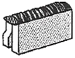
- 겹치기 이음
- 변두리 이음
- 맞대기 이음
- 측면 필릿 이음
(정답률: 49%)
18. 피복 아크 용접 작업에서 아크 발생을 4분, 아크 정지를 6분 하였다면 용접기 사용률은?
- 20%
- 30%
- 40%
- 60%
(정답률: 82%)
19. 용접 후 용접변형에 대한 교정방법이 아닌 것은?
- 전진법
- 롤러에 의한 법
- 가열 후 해머질하는 법
- 얇은 판에 대한 점 수축법
(정답률: 61%)
20. 피복 아크 용접에서 아크쏠림을 방지하기 위한 조치 사항으로 틀린 것은?
- 직류(DC)용접기 대신 교류(AC)용접기를 사용한다.
- 접지점을 될 수 있는 대로 용접부에서 멀리한다.
- 피복제가 모재에 접촉할 정도로 짧은 아크를 사용한다.
- 용접봉 끝을 아크 쏠림 동일방향으로 기울인다.
(정답률: 57%)
2과목: 자기탐상검사 원리
21. 다음 중 자분탐상검사 시 자분 검사액에 대한 설명으로 옳은 것은?
- 자분의 분산매는 휘발성이 높아야 한다.
- 자분의 분산매는 인화점이 낮아야 한다.
- 자분의 분산매는 점도가 높고, 적심성이 좋아야 한다.
- 검사액 농도는 형광자분의 경우 0.2~2g/ℓ의 농도범위가 사용된다.
(정답률: 60%)
22. 자분모양의 기록방법 중 전사에 대한 설명으로 잘못된 것은?
- 점착성 테이프에 전사한 것을 복사해 두면 장기간 보존할 수 있다.
- 셀로판 테이프가 가장 많이 사용된다.
- 자기 테이프에 놀자하는 방법이 있다.
- 점착성 테이프에 자분지시모양을 전사하는 방법은 습식흑색자분을 전사하는 것이 좋다.
(정답률: 60%)
23. 진공 속에서 두 자극 사이에 작용하는 자기력을 측정했을 때 작용하는 힘을 나타내는 것은?
- 쿨롱력
- 정전기력
- 로렌츠력
- 핵력
(정답률: 64%)
24. 자분탐상시험 방법 중 반자계의 발생 대책이 필요한 자화 방법은?
- 코일법
- 전류관통법
- 프로드법
- 축통전법
(정답률: 55%)
25. 아래 그림 중 봉강을 직류 축동전법으로 자화시 자계의 분포를 직선 및 곡선으로 나타낸 것으로 가장 올바른 것은? (단, 봉강의 투자율은 상수이다.)
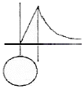
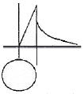
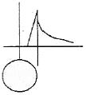
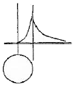
(정답률: 58%)
26. 다음 중 탈자를 하지 않고 재시험을 하여도 무방한 경우는?
- 자기 펜 흔적으로 의심되는 지시가 나타나 재검사하는 경우
- 국부적인 냉간 가공부에서 지시가 나타나 결함 여부를 확인하기 위하여 재검사하는 경우
- 국부적인 용접 보수 면에서 지시가 나타나 결함 여부를 확인하기 위하여 재검사하는 경우
- 자화전휴의 계산이 잘못되어 초기 자화전류보다 높은 전류로 재검사하는 경우
(정답률: 80%)
27. 극간법 자분탐상시험의 설명으로 옳은 것은?
- 결함 검출능을 높이기 위해 직류를 사용한다.
- 자극과 시험체간 밀착도가 나쁠수록 불감대가 넓어진다.
- 인상력은 철심단면적의 크기와 극간 거리에 따른다.
- 시험면의 자계 강도는 AT(Ampere turn)로 나타낸다.
(정답률: 52%)
28. 사이라트론, 사이리스터 등을 사용하여 얻은 1펄수의 전류는?
- 맥류
- 충격전류
- 삼상전파정류
- 교류
(정답률: 56%)
29. 강구조물의 용접부 표면을 평활하게 다듬고 자분탐상시험을 할 경우 다음 중 일반적으로 가장 경미하게 보아도 되는 결함은?
- 균열
- 언터컷
- Fissure
- 블로홀
(정답률: 66%)
30. 다음 중 탈자가 필요없는 경우는?
- 자분탐상검사에서 공정 중 재검사를 하고자 할 때
- 시험품의 잔류자기가 계측기의 작동이나 정밀도에 영향을 미칠 경우
- 시험품의 잔류자기가 시험 이후 기계가공을 곤란하게 할 때
- 시험품이 마찰부분에 사용되어 마찰부에 철분 등이 흡착되어 마모를 촉진시킬 염려가 있을 때
(정답률: 80%)
31. 자분탐상시험의 연속법에서의 일반적인 통전시간은?
- 1/4 ~1초
- 1 ~ 3초
- 3 ~ 5초
- 50 ~ 100초
(정답률: 58%)
32. 자계의 세기 H=2000[AT/m]일 때 자속밀도 B=0.5[Wb/m2] 인 재질의 투자율은 얼마인가?
- 4 × 103 [H/m]
- 25 × 10-4 [H/m]
- 5 × 103 [H/m]
- 5 × 10-2 [H/m]
(정답률: 49%)
33. 축통전법에 관한 사항 중 틀린 것은?
- 자화전류치는 시험체의 직경에 따라 변화되며, 길이와는 관계없다.
- 전극에는 도체패드를 사용하여 넓은 면적이 접촉되도록 한다.
- 실린더형과 같은 시험체(Pipe)의 원주 내면은 검사가 불가능하다.
- 반자계가 발생하므로 이를 감안하여 전류치를 설정한다.
(정답률: 26%)
34. 다음 중 자분탐상시험이 가능한 재질은?
- 백금(Platinum)
- 비스무스(Bismuth)
- 동(Copper)
- 가도리늄(Gadollinium)
(정답률: 55%)
35. 직류전류와 습식자분을 사용하여 자기탐상시험 결과, 자분지시가 나타났다. 이 지시가 표면불연속 또는 표면직하 불연속인지를 확인하기 위한 조치로 옳은 것은?
- 자화전류를 높여 같은 방법으로 재시험한다.
- 충격전류(surge current)로 재시험한다.
- 탈자 후 교류(AC)로 재시험한다.
- 탈자 후 건식자분을 사용하여 반파정류직류(HWDC)로 재시험한다.
(정답률: 85%)
36. 그림의 자기이력곡선에서 B점이 의미하는 것은?
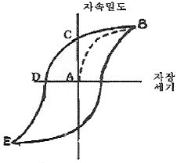
- 공급되는 정류된 AC파의 중간점을 표시한다.
- 재료의 자기 포화점이다.
- 자화전류의 제거 후에도 부품에 잔존하는 잔류자기를 나타내는 점이다.
- 항자력의 한계치이다.
(정답률: 76%)
37. A형 표준시험편의 사용 용도에 따라 특성을 비교하였을 때 원형이 직선형에 비하여 장점인 것은?
- 한정된 방향의 자계의 세기 결정에 사용된다.
- 유효 자계의 크기 측정에 사용된다.
- 자계의 방향 확인에 사용된다.
- 자계의 종류(원형 또는 직선 자계)를 확인하는 데 사용된다.
(정답률: 44%)
38. 습식 잔류법을 사용할 때 사분용액이 검사부품에 적용되는 시기는?
- 자화 직전
- 자화 중에
- 자화 후에
- 시기에 구애받지 않음
(정답률: 76%)
39. 내반경 a[m], 외반경 b[m]인 중공원통 도체에 균일한 전류밀도로 전류 I[A]가 흐르고 있을 때 원통 중심부로부터 r[m] 떨어진 원통 외부 점 P의 자계의 세기 [AT/m]는? (단, r＞b 이다.)
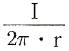
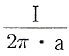
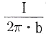
- 0
(정답률: 73%)
40. 자분탐상시험에 사용되는 자분이 가져야 할 특성을 옳게 설명한 것은?
- 보자성이 높아야 하며 투자율도 높아야 한다.
- 보자성이 낮아야 하며 투자율도 낮아야 한다.
- 보자성이 낮아야 하며 투자율은 높아야 한다.
- 투자율이 높아야 하며 항자성도 높아야 한다.
(정답률: 60%)
3과목: 자기탐상검사 시험
41. 다음 중 자분탐상검사로 대형 주조물의 결함을 검출할 수 있는 가장 효율적인 방법은?
- 자계가 불연속에 대해 평행하도록 전류를 통한다.
- 주조물의 한쪽 끝에서 중심까지 전류를 보낸다.
- 1회에 3~8인치 간격으로 프로드를 접촉시키고 전류를 통한다.
- 강한 자계가 검사를 방해하지 않도록 투자율을 0(zero)에 가깝게 낮춘다.
(정답률: 71%)
42. 자화된 시험체가 강자성체에 접촉하여 나타나는 지시는?
- 자기펜흔적
- 제질경계지시
- 표면거칠기지시
- 단조파열
(정답률: 72%)
43. 비형광자분을 사용하여 자분탐상검사할 때 시험면에서 조도는 일반적으로 얼마 이상이어야 하는가?
- 50 lx
- 100 lx
- 300 lx
- 500 lx
(정답률: 66%)
44. 육안으로 검사하기 힘든 좁고 깊은 구멍의 내면 및 구석진 곳까지도 자분탐상검사하기에 적합한 방법은?
- 홀소자법
- 자화고무법
- 누설자속탐상법
- 자기다이오드법
(정답률: 63%)
45. 비형광자분과 비교한 습식-형광자분의 장점이 아닌 것은?
- 열화되기 쉽다
- 대비(contrast)가 좋다.
- 미세결험 검출에 적합하다.
- 저농도로 사용이 가능하다.
(정답률: 72%)
46. 침투탐상검사에 사용되는 블랙라이트라고 부르는 자외선 조사장치에서 방사되는 자외선파장의 영역은?
- 250 ~ 320nm
- 320 ~ 400nm
- 350 ~ 500nm
- 400 ~ 600nm
(정답률: 73%)
47. 표면하 불연속의 검출에 대한 감도가 가장 좋은 자분탐상 시험방법은?
- 교류전류를 이용한 습식법
- 교류전류를 이용한 건식법
- 직류전류를 이용한 습식법
- 직류전류를 이용한 건식법
(정답률: 60%)
48. 자분탐상검사에 교류 전류를 사용하는 경우의 설명으로 옳은 것은?
- 탈자시킬 때는 사용하지 않는다.
- 자속의 침투깊이가 매우 깊다.
- 일반적으로 잔류법에는 적용하지 않는다.
- 표면 불연속의 검출에 비효율적이다.
(정답률: 53%)
49. 직경 50mm, 깊이 150mm 인 봉을 코일법으로 자분탐상 검사할 때 장비의 최대 전류가 3000A라면 검사체에 코일을 몇 회 감아야 하는가?
- 3회
- 4회
- 5회
- 6회
(정답률: 61%)
50. 내부결함 검출에 효과적인 자분과 자화전류의 조합은?
- 형광 습식자분-반파직류
- 비형광 습식자본-교류
- 비형광 건식자분-반파 직류
- 형광건식자분-교류
(정답률: 59%)
51. 다음 중 자분탐상시험 시 표면에 존재하는 피로균열의 검사를 위해 가장 효과적인 자화전류는?
- 교류
- 직류
- 반파 직류
- 전파 정류한 직류
(정답률: 61%)
52. 자분탐상장치 및 재료와 안전에 주의하여야 할 대상을 잘못 연결한 것은?
- 자외선등 - 피부 화상
- 건식자분 - 방진
- 습식자분 - 화재
- 자화케이블 - 감전
(정답률: 59%)
53. 자분탐상검사와 비교 시 누설자속탐상검사의 특징이 아닌 것은?
- 자동화가 가능하다.
- 고속 검사가 가능하다.
- 결함의 정량 측정이 가능하다.
- 검출 할 수 있는 한계의 결함깊이가 작다.
(정답률: 39%)
54. 전류관통법으로 배관(Pipe) 시험체를 자화한 경우 자계의 강도가 가장 강한 부분은?
- 배관의 외벽면
- 배관의 내벽면
- 배관의 전 두께에 동일
- 배관 벽의 두께 방향으로 중간 부분
(정답률: 72%)
55. 유사모양 또는 의사지시모양의 판별법 중 잘못된 것은?
- 단면급변지시 : 자화정도를 약하게 하는가 잔류법으로 시험한다.
- 투자율이 다른 재질경계지시 : 침투탐상시험 등 다른 시험방법으로 확인한다.
- 표면거칠기지시 : 표면 연마 후 약품으로 부식시켜 금속 현미경에 의한 미시적 시험을 한다.
- 자극지시 : 접촉위치를 바꾸어 재자화한다.
(정답률: 50%)
56. 자분모양의 식별성을 향상시키기 위한 조건으로 볼 수 없는 것은?
- 적절한 자화
- 적절한 자분 적용
- 보자력이 높은 자분 적용
- 올바른 자세와 바른 탐상 및 관찰
(정답률: 75%)
57. 저탄소강(0.04%) 재료의 시험체를 탐상할 때 표면 아래에 존재하는 불연속을 검출하기 위하여 습식자분을 사용하는 경우 더 깊은 곳까지 검출할 수 있는 방법은?
- 충격전류 사용
- 직류전류 사용
- 잔류전류 사용
- 교류전류 사용
(정답률: 67%)
58. 자분이 가져야 할 자기적 성질에 대한 설명으로 옳은 것은?
- 투자율이 낮을 것
- 투자율과는 관계가 없다.
- 보자력이 작을 것
- 보자력과는 관계가 없다.
(정답률: 67%)
59. 자분탐상시험 중 직접 통전방식이 아닌 것은?
- 극간법
- 축통전법
- 프로드법
- 직각통전법
(정답률: 62%)
60. 프로드법에서 전극에 구리망사를 입히는 주된 이유는?
- 전류가 잘 통하도록 도와준다.
- 전극부위의 자속밀도를 높이기 때문이다.
- 검사품에 골고루 자계를 유도하기 위함이다.
- 접촉면을 넓게 하고 스파크에 의한 제품의 손상을 줄이기 때문이다.
(정답률: 74%)
4과목: 자기탐상검사 규격
61. 보일러 및 압력용기에 대한 자분탐상검사(ASME Sec.V Art.7)에 따라 자분탐상 시험을 할 때의 기준으로 틀린 것은?
- 고류요크의 견인력은 최소 4.5kg이다.
- 직류요크의 견인력은 최대 극간에서 최소 13.5kg이다.
- 전류계는 최소한 1년에 한 번 교정한다.
- 비형광자분의 시험면 밝기는 최소 1000룩스이다.
(정답률: 77%)
62. 철강 재료의 자분탐상 시험방법 및 자분모양의 분류(KS D 0213)에서 자분모양의 분류에 관한 설명으로 틀린 것은?
- 균열에 의한 자분모양으로 분류되는 경우도 있다.
- 연속한 자분모양은 선상 또는 원형상의 자분모양으로 분류한다.
- 시험면에 생긴 자분모양이 의사모양이 아닌 것을 확인한 후에 해야 한다.
- 여러 개의 자분모양이 일정한 면적 내에 분산해 있으면 분산한 자분모양으로 분류한다.
(정답률: 60%)
63. 철강 재료의 자분탐상 시험방법 및 자분모양의 분류(KS D 0213)에서 시험기록을 작성할 때 시험체에 대해서 기록하지 않아도 되는 것은?
- 무게
- 치수
- 품명
- 열처리상태
(정답률: 70%)
64. 철강 재료의 자분탐상 시험방법 및 자분모양의 분류(kS D 0213)에서 (A2-7/50) X 2의 설명으로 옳은 것은?
- A2-7/50의 시험편으로 2번 시험한다.
- A2-14/50의 시험편을 사용하여 시험한다.
- A4-14/50의 시험편을 사용하여 시험한다.
- A2-7/50으로 자분모양을 얻을 수 있는 자화 전류치의 2배로 시험한다.
(정답률: 63%)
65. 철강 재료의 자분탐상 시험방법 밑 자분모양의 분류(KS D 0213)에 따른 탐상시험 시 자화전류에 대한 설명 중 틀린 것은?
- 교류를 써서 자화하는 경우는 원칙적으로 표면 흠의 검출에 한한다.
- 맥류는 그것에 함유된 교류성분이 클수록 내부 흠의 검출성능이 낮다.
- 교류는 표피효과의 영향에 의해 표면 아래의 자화는 직류에 비해 크다.
- 직류를 써서 자화하는 경우는 표면 홈 및 표면근접의 내부의 흠을 검출할 수 있다.
(정답률: 69%)
66. 보일러 및 압력용기에 대한 자분탐상시험 합격기준(ASME Sec.Ⅷ Div.1 App.6)에 지시를 평가할 때 다음 중 불합격으로 판정해야 되는 것은?
- 크기가 1mm인 선형지시
- 크기가 2mm이고 슬래그 혼입으로 예상되는 선형지시
- 크기가 3mm이고 기공으로 예상되는 원형지시
- 크기가 2mm이고 가공으로 예상되는 지시가 1mm 간격으로 2개가 나란히 검출된 원형지시
(정답률: 47%)
67. 보일러 및 압력용기에 대한 자분탐상검사(ASME Sec.V Art.7)에서 프로드(Prod)법에 대한 설명으로 틀린 것은?
- 시험체에 직접 자화전류를 보낸다.
- 부품, 구조물의 부분탐상을 위하여 선형자계를 형성할 때 사용한다.
- 전극인 동봉의 굵기는 자화전류의 크기에 따라 필요가 있다.
- 아크를 방지하기 위한 특별한 조치가 필요하다.
(정답률: 56%)
68. 철강 재료의 자분탐상 시험방법 및 자분모양의 분류(SK D 0213)에 따른 자화방법과 그 부호가 잘못 연결된 것은?
- 코일법 : C
- 극간법 : M
- 자속관통법 : I
- 직각통전법 : EA
(정답률: 66%)
69. 보일러 및 압력용기에 대한 자분탐상검사(ASME Sec.V Art.7)에 따라 시험 전에 실시해야 할 전처리에 관한 설명 중 잘못된 것은?
- 검사부위와 최소한 25mm 부근까지는 기름이나 기타 오염물질이 있어선 안된다.
- 전처리 작업은 세정제, 솔벤트, 증기세척 등의 방법으로 한다.
- 표면이 불균일하여 지시를 가릴 우려가 있다면 그라인딩 등과 같은 기계적 전처리 방법을 사용할 수도 있다.
- 0.⑤mm 이상 되는 비전도성 도막은 페인트제거제 등을 이용해 제거해야 한다.
(정답률: 50%)
70. 보일러 및 압력용기에 대한 자분탐상검사(ASME Sec.V Art.7)에 따라 직류 또는 정류된 자화전류를 이용하여 비원통형의 기하학적 형상을 가진 강자성체를 자화할 때 요구되는 자화전류치를 산출하는 두께 기준은?
- 시험체의 가로 길이를 기준으로 산정한다.
- 시험체의 세로 길이를 기준으로 산정한다.
- 험체의 대각선 길이를 기준으로 산정한다.
- 시험체의 가로, 세로 길이의 평균치를 기준으로 산정한다.
(정답률: 48%)
71. 철강 재료의 자분탐상 시험방법 및 자분모양의 분류(SK D 0213)에서 전처리의 범위는 시험범위보다 넓게 잡아야 한다. 용접부의 경우는 원칙적으로 시험범위에서 모재측으로 몇 mm 넓게 잡아야 하는가?
- 10 mm
- 20 mm
- 30 mm
- 40 mm
(정답률: 66%)
72. 철강 재료의 자분탐상 시험방법 및 자분모양의 분류(SK D 0213)에서 A2형 표준시험편에는 원형 홈이 없는 이유는?
- 가공하기가 어렵기 때문
- 자기특성이 압연 방향과 그에 직각 방향에서 다르기 때문
- 어닐링처리를 하면 재료가 자기적으로 부드러워지기 때문
- 어닐링처리를 하면 이방성이 매우 작아지기 때문
(정답률: 46%)
73. 철강 재료의 자분탐상 시험방법 및 자분모양의 분류(SK D 0213)에서 외경이 100mm인 B형 시험편의 관통 구멍의 지름은 얼마인가?
- 20mm
- 25mm
- 50mm
- 75mm
(정답률: 57%)
74. 보일러 및 압력용기에 대한 자분탐상검사(ASME Sec.V Art.7)에서 코일법 시험에 필요한 암페어(A)를 나타내는 식은?
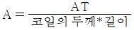
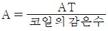
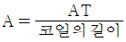
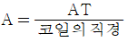
(정답률: 77%)
75. 보일러 및 압력용기에 대한 자분탐상검사(ASME Sec.V Art.7)에 따른 시험에서 20mm 직경인 환봉을 4인치 간격의 프로드로 자화할 때 적절한 전류값은?
- 250[A]
- 350[A]
- 450[A]
- 550[A]
(정답률: 54%)
76. 보일러 및 압력용기에 대한 자분탐상검사(ASME Sec.V Art.7)에 따라 축통전법이나 전류관통법을 사용하는 자분탐상법의 전체 성능 및 감도를 평가하고 비교하는 데 사용되는 시험편은?
- 케토스 링
- 인공흠 심
- 홀효과 접선장 브로브
- 파이형 자장 지시계
(정답률: 54%)
77. 철강 재료의 자분탐상 시험방법 및 자분모양의 분류(SK D 0213)에서 자계의 방향과 불연속이 평행하다면 예상되는 자분모양 지시는?
- 자분모양이 나타나지 않는다.
- 미약하고 넓게 자분모양이 나타난다.
- 흩어진 자분모양이 나타난다.
- 선명한 자분모양이 나타난다.
(정답률: 56%)
78. 철강 재료의 자분탐상 시험방법 및 자분모양의 분류(SK D 0213)에서 맥류의 정의로 맞는 것은?
- 사이클로트론, 사일리스터 등을 사용하여 얻은 자화전류
- 주기적으로 크기가 변화하는 자화전류(단, 극성은 불변)
- 직류와 같은 전류
- 교류와 같은 전류
(정답률: 52%)
79. 철강 재료의 자분탐상 시험방법 및 자분모양의 분류(SK D 0213)에서 탐상 내용에 대한 설명으로 틀린 것은?
- 투자율이 급변부에 나타나는 자분모양은 현미경 등으로 확인한다.
- 용접부의 열처리 후에 하는 시험의 자화방법은 프로드법을 사용한다.
- 열처리가 지정된 용접부의 시험에서 합격 여부는 최종 열처리한 후에 한다.
- 여러 개의 시험품을 동시에 시험하는 경우 자화 방법 및 자화전류를 특히 고려해야 한다.
(정답률: 53%)
80. 보일러 및 압력용기에 대한 자분탐상검사(ASME Sec.V Art.7)에서는 직접 접촉법에 의한 원형자화법을 규정하고 있다. 외경 5인치 이하의 시험체에 대한 직경 1인치 당 필요한 직류 자화전류 값은?
- 100 ~125[A]
- 300 ~ 800[A]
- 35000[A.T]
- 45000[A.T]
(정답률: 35%)